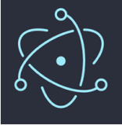
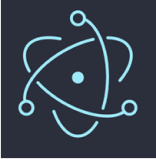

Project Objective:
Our objective was to explore the use of Electron and the web technology stack for rapid, cross-platform application development. In this project, we successfully built a responsive client capable of communicating with a server via asynchronous HTTP calls. Additionally, we developed a secure server application using Node.js and Express.
Looking ahead, TechRAT engineers can leverage these technologies to efficiently create and deploy cross-platform applications.
Our objective was to explore the use of Electron and the web technology stack for rapid, cross-platform application development. In this project, we successfully built a responsive client capable of communicating with a server via asynchronous HTTP calls. Additionally, we developed a secure server application using Node.js and Express.
Looking ahead, TechRAT engineers can leverage these technologies to efficiently create and deploy cross-platform applications.
Intern Contribution:
My tasks included but not limited to full stack development by building a sample application using Electron. Incorporating the principles of responsive design and best practices for web application security.
My tasks included but not limited to full stack development by building a sample application using Electron. Incorporating the principles of responsive design and best practices for web application security.
Full Stack Development using Electron and Node
Starting Up Repository
We started a GitHub repository to help keep track of tutorial materials and for future use as a digital portfolio to host code samples for potential employers.
 Node.js
Node.jsThis was the start of our server-side application. We used Node and its built-in library to perform native filesystem operations. We used another built-in library to ensure that all file paths were constructed to work on the host operating system with no conditional logic.

Node Package Manager
NPM stands for Node Package Manager. It is a package manager for the Node JavaScript platform. NPM is known as the worlds largest software registry. Open-source developers all over the world use NPM to publish and share their source code. NPM consists of three components:
Some of NPM Libraries I used

Electron helps us develop cross-platform applications by using existing web technologies, because all the platforms support web technologies. Electron helps in developing cross-platform apps easier.

Electron helps us develop cross-platform applications by using existing web technologies, because all the platforms support web technologies. Electron helps in developing cross-platform apps easier.
Ensuring scale and aspect ratios...
I focused on ensuring the application's optimal appearance across various devices including phones, tablets, monitors, and smartwatches through responsive design implementation.
Putting It All Together...
Created an Electron based application designed to send and receive messages from a server and display that information to the user.
Used Electron’s inter-process messaging system for communication between the main thread and the render thread.
Built a responsive interface using CSS.
Used NPM for dependency management.
Used Axios to make asynchronous HTTP POST requests to a server.
Used Javascript to dynamically update UI.
Used Git for source control.
Used Node as the application framework
Implemented a simple Express server to listen for a respond to messages
Used NPM for dependency management
UsedGit for source control
Created an Electron based application designed to send and receive messages from a server and display that information to the user.
Used Electron’s inter-process messaging system for communication between the main thread and the render thread.
Built a responsive interface using CSS.
Used NPM for dependency management.
Used Axios to make asynchronous HTTP POST requests to a server.
Used Javascript to dynamically update UI.
Used Git for source control.
Used Node as the application framework
Implemented a simple Express server to listen for a respond to messages
Used NPM for dependency management
UsedGit for source control
What I took from this experience
I am proud of what I accomplished. Going from knowing nothing about full stack development to building a functioning client and server application in under 10 weeks was an amazing experience.
This internship was invaluable because I had the chance to meet great people and amazing mentors. I gained essential knowledge of teamwork and coding through engaging development tasks. These skills will benefit me throughout my career.
Special thanks to TechRAT Lab for providing this valuable opportunity.

I am proud of what I accomplished. Going from knowing nothing about full stack development to building a functioning client and server application in under 10 weeks was an amazing experience.
This internship was invaluable because I had the chance to meet great people and amazing mentors. I gained essential knowledge of teamwork and coding through engaging development tasks. These skills will benefit me throughout my career.
Special thanks to TechRAT Lab for providing this valuable opportunity.